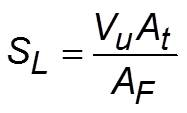
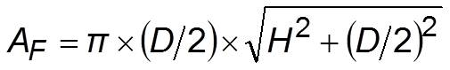

Vu: average flow velocity in tube, At: tube cross sectional area, AF: conical surface area of flame
This method is known as area method.
Vu: average flow velocity in tube, At: tube cross sectional area, AF: conical surface area of flame
This method is known as area method.
By carrying out a mass balance across the flame,

Vu - average flow velocity of the unburned fuel-air mixture
At - cross-sectional area of the tube
AF - conical surface area of the flame
flame surface area,
